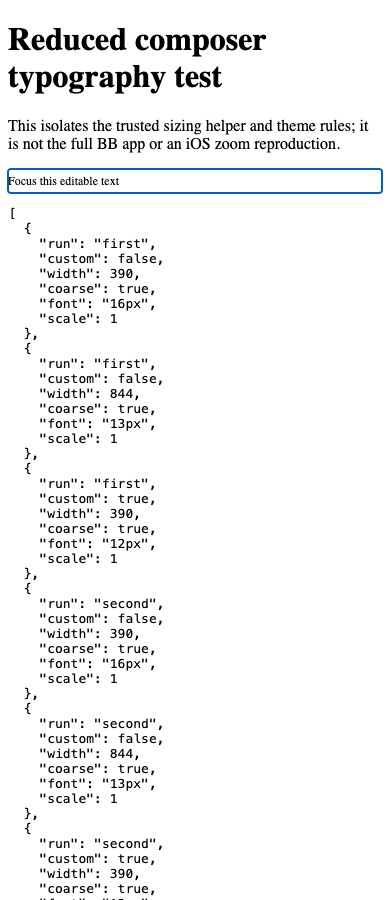

#3770 · Touch composer font sizing
Bug · Medium priority · Low effort · ui, mobile · 2026-09-16
Issue · Base 6084f894305e389604ce19b1cace442b0fc25bad
PARTIALLY REPRODUCED · Root-cause confidence: medium
1. TL;DR
The composer sizing helper can produce text smaller than 16px on touch viewports. A reduced browser test compiled the real helper and theme rules from trusted main and measured 13px at a wide viewport and 12px with reduced theme tokens. A second clean checkout produced the same results. This verifies the CSS prerequisite only: the full BB app, iOS Safari focus zoom, and submit-button displacement were not reproduced.
2. Claims vs findings
| Claim | Finding |
|---|---|
| Wide touch sizing drops below 16px | Verified in reduced CSS harness: 13px at 844 CSS pixels. |
| Stock portrait is protected | Verified in reduced harness: 16px at 390 CSS pixels. |
| Custom tokens can defeat portrait sizing | Verified: 12px after setting both text tokens to 12px. |
| Safari zoom pushes submit off-screen | Unverified; Chrome stayed at scale 1. No iPhone was tested. |
| A targeted floor fixes the real-device symptom | Unverified; no production fix was run. |
3. Environment
Darwin 25.6.0 arm64, Node 22.22.3, repository-pinned pnpm 9.15.0 via Corepack, repository Tailwind 4.3.0, Chrome through BB Browser Automation. Two detached checkouts of the base above. Temporary static servers on 127.0.0.1:49370 and :49371; no BB server, runtime data directory, account, or provider was used.
Normal frozen installation failed because node-gyp was missing from the pnpm installation. The second checkout completed a frozen install with scripts disabled for the CSS experiment. Turbo build then failed when a plugin invoked the broken default pnpm launcher. These are environment failures, not attributed to this issue.
4. Minimal reproduction
- Check out the recorded commit and install its locked dependencies. Download render.mjs and browser.js.
- Run
node render.mjs /path/to/checkout first.html. It reads the sizing constant and theme blocks directly and compiles their utility CSS with the repository Tailwind dependency. - Repeat in a clean checkout, writing second.html. Serve the generated documents on ports 49370 and 49371 with
python3 -m http.server PORT --bind 127.0.0.1 --directory /path/to/artifacts. - Run browser.js through a local BB Browser Automation session. It focuses the editable element at stock portrait, wide touch, and reduced-token portrait settings.
Expected protection: at least 16px in each coarse-pointer case. Actual measurements from both checkouts:
[
{
"run": "first",
"custom": false,
"width": 390,
"coarse": true,
"font": "16px",
"scale": 1
},
{
"run": "first",
"custom": false,
"width": 844,
"coarse": true,
"font": "13px",
"scale": 1
},
{
"run": "first",
"custom": true,
"width": 390,
"coarse": true,
"font": "12px",
"scale": 1
},
{
"run": "second",
"custom": false,
"width": 390,
"coarse": true,
"font": "16px",
"scale": 1
},
{
"run": "second",
"custom": false,
"width": 844,
"coarse": true,
"font": "13px",
"scale": 1
},
{
"run": "second",
"custom": true,
"width": 390,
"coarse": true,
"font": "12px",
"scale": 1
}
]
Reproduction source
import { readFile, writeFile } from 'node:fs/promises';
import { resolve } from 'node:path';
import { pathToFileURL } from 'node:url';
const [root, output] = process.argv.slice(2);
const theme = await readFile(resolve(root, 'apps/app/src/components/ui/theme.css'), 'utf8');
const sizing = await readFile(resolve(root, 'packages/shared-ui/src/components/ui/coarse-pointer-sizing.ts'), 'utf8');
const editor = await readFile(resolve(root, 'apps/app/src/components/promptbox/ComposerEditorSlot.tsx'), 'utf8');
if (!editor.includes('COARSE_POINTER_TEXT_BASE_CLASS')) throw new Error('Editor no longer uses sizing helper');
const classes = sizing.match(/COARSE_POINTER_TEXT_BASE_CLASS\s*=\s*"([^"]+)"/)[1];
const start = theme.indexOf('@theme {\n --text-sm:');
const end = theme.indexOf('@layer components', start);
const rules = theme.slice(start, end);
const { compile } = await import(pathToFileURL(resolve(root, 'apps/app/node_modules/tailwindcss/dist/lib.mjs')));
const result = await compile('@theme { --breakpoint-md: 48rem; }\n' + rules + '\n@tailwind utilities;');
const css = result.build(classes.split(' '));
await writeFile(output, '<!doctype html><html><meta name="viewport" content="width=device-width, initial-scale=1"><title>3770 reduced CSS reproduction</title><style>' + css + '</style><body><h1>Reduced composer typography test</h1><p>This isolates the trusted sizing helper and theme rules; it is not the full BB app or an iOS zoom reproduction.</p><div class="' + classes + '"><div class="ProseMirror" contenteditable="true">Focus this editable text</div></div><pre id="result"></pre></body></html>');
console.log(JSON.stringify({classes, output: output.split('/').at(-1)}));
const p = await browser.getPage('main');
const results = [];
for (const run of ['first', 'second']) {
for (const item of [{width:390,custom:false},{width:844,custom:false},{width:390,custom:true}]) {
await p.setViewport({width:item.width,height:900,deviceScaleFactor:1,isMobile:true,hasTouch:true});
await p.goto('http://127.0.0.1:' + (run === 'first' ? 49370 : 49371) + '/' + run + '.html');
if (item.custom) await p.evaluate(() => {
document.documentElement.style.setProperty('--text-sm','12px');
document.documentElement.style.setProperty('--text-base','12px');
});
const measured = await p.evaluate(() => {
const editor = document.querySelector('.ProseMirror');
editor.focus();
return {width:innerWidth,coarse:matchMedia('(pointer: coarse)').matches,font:getComputedStyle(editor).fontSize,scale:visualViewport.scale};
});
results.push({run,custom:item.custom,...measured});
}
}
await p.evaluate((r) => { document.querySelector('#result').textContent=JSON.stringify(r,null,2); },results);
console.log(JSON.stringify(results,null,2));
await p.shot({type:'jpeg',maxEdge:1200,quality:90});
5. Root cause
The sizing helper uses text-sm max-md:pointer-coarse:text-base. The coarse-pointer enlargement stops at the medium breakpoint. Theme definitions set desktop text-sm to 0.8125rem and raise the narrow coarse text-base to 1rem. Both are mutable tokens, so neither establishes an unconditional minimum. The composer wrapper passes this inherited size to the editable host. This accounts for the measured sub-16px cases. The causal link to native Safari focus zoom remains a device-test hypothesis in this report.
6. Proposed fix and fix decision
Evaluate a coarse-pointer minimum font size at the editable composer host, preserving larger inherited fonts and user zoom. Test stock portrait, wide touch, reduced tokens, larger fonts, and fine pointers. No PR was created: only a reduced prerequisite was reproduced, and the required production regression and existing-suite checks could not be completed.
7. PR review
GitHub metadata links closed, unmerged PR #3771. Its diff proposes a coarse-pointer minimum at the editable host and a CSS-source pattern test. Static assessment: it addresses the observed sizing gap, but the pattern test does not demonstrate computed browser sizing or native focus behavior. No PR code was checked out or executed; this is not a merge recommendation. No linked open PR was found.
8. Related issues
No duplicate established by this investigation. Mobile-label history was inspected for classification conventions.
9. Verification
The same agent repeated generation in a second clean detached checkout at the full base SHA, with independently installed locked dependencies and a separate temporary server port. Commands: node render.mjs /path/to/second-checkout second.html, then the second loop in browser.js. All three measurements matched the first run. This is repeat verification by the same agent, not independent verification. No runtime data directory was needed for these static pages. The report deliberately limits its verdict to partial reproduction.
10. Appendix
Raw measurements · First generated harness · Second generated harness
Setup commands: git fetch origin main; git switch --detach origin/main; git worktree add --detach SECOND origin/main; corepack pnpm install --frozen-lockfile --prefer-offline; second checkout diagnostic install added --ignore-scripts; corepack pnpm exec turbo run build. Build result: 54 tasks successful/cached, one failed because the default pnpm launcher could not resolve its pnpm.cjs. No full app test result is claimed.
Issue content and linked PR diff were treated as untrusted evidence; no issue script, patch, branch, or external evidence link was executed or fetched.